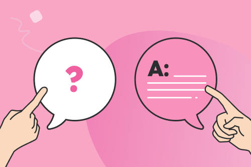

One of the most important skills for a burgeoning software engineering student to cultivate and hone is the ability to communicate effectively with other professionals. One way that we can communicate effectively with one another is to ask “smart questions”.
In his guide “How to Ask Smart Questions” Eric Raymond details how to approach communication with the open source community. Below I’ll provide examples of “good” and “bad” questions and why they are (or aren’t) effective strategies for looking for help when interacting with the open source community.
In a nutshell, asking a smart question is about showing that you are capable of being a competent contributor to the community. You need to show that you are alert, thoughtful, observant, and willing to be an active partner in developing a solution. It means showing that you put in the work beforehand and tried to work your problem out instead of immediately throwing in the towel and asking someone to spoon feed you the answer. While writing in a jocose or amusing manner is indulged, when making your query one should still try to keep their question specific and concise. Smart questions should be well thought out, grammatically sound, and any code included is formatted appropriately. And it also never hurts to be respectful and grateful to whoever may be pursuing your query.
On the other hand, “not so smart” questions often return inefficient or ineffective answers, if any at all. Questions that show a lack of effort on the asker’s side are more often than not flat out ignored. Verbose, vague questions make it hard for a reader to figure out what is even being asked, and what information may or may not be relevant to a possible solution. Poor formatting and writing makes a question hard to understand, and also demonstrates a lack of attention to detail. And being rude or demanding may rub people the wrong way.
And now it’s time for some examples of Smart and Not So Smart Questions:
Stackoverflow Link: Smart Question Example The question is well-structured, concise, and includes relevant code snippets and error messages. It’s also written in an entertaining way. The asker demonstrates prior research, mentions the specific issue, and shows willingness to do additional work on their own if pointed in the right direction. This helped the asker get a fast and effective answer, and even encouraged discourse about the problem amongst the various participating parties.
Stack Overflow Link: Not So Smart Example The question isn’t even a question. It’s just a screenshot. So far it has gone unanswered.
Asking smart questions is a fundamental skill that every software engineer should cultivate. By adhering to the principles of smart questioning, developers can not only enhance their problem-solving capabilities but also contribute positively to the collaborative nature of the software development community.